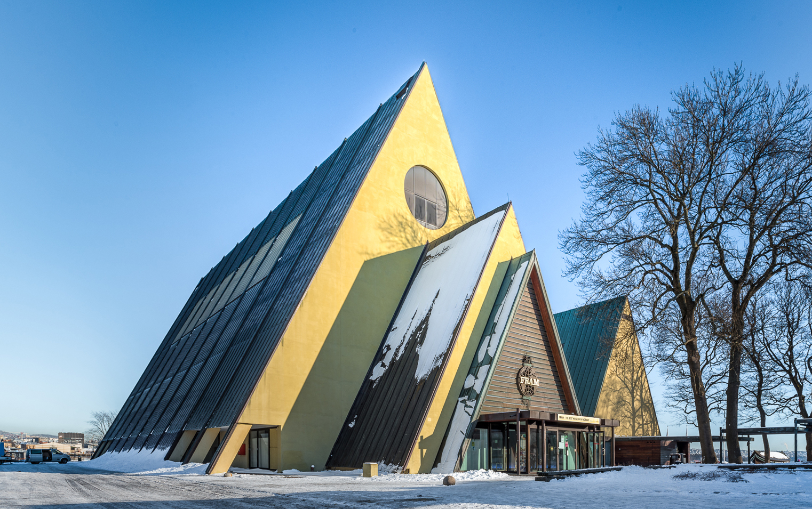

Lo que aguarda por tí
Mira lo que tenemos preparado para tu estancia en Oslo
Fram Museum
Aprende sobre la exploración polar y las naves en que los tripulantes se embarcaron para llegar a los confines de la zona ártica.
Vigeland Park
Admira las esculturas, laberintos y figuras construidas por el celebre artista Gustav Vigeland dispuestas de manera que cuentan todo tipo de lúgubres y sentimentales historias sobre el transcurso y significado de la vida.

Glaciales polares
O adéntrate en lo mas profundo de los paisajes congelados, en una expedición hacia los imponentes y majestuosos glaciales permanentes que se posan en varias areas de la zona.
Por su puesto que esto no es todo, mira el siguiente video en le que se habla de la multitud de puntos que no te puedes perder mientras estés de visita.
Tripadvisor. (s. f.). THE 15 BEST Things to Do in Oslo - 2022 (with Photos). Recuperado 30 de agosto de 2022, de https://www.tripadvisor.com/Attractions-g190479-Activities-Oslo_Eastern_Norway.html
Actividad Integradora 2